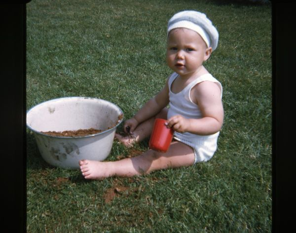

About myself
So, a presentation is a good start. Write a few words about yourself. I'm starting.

My name is Mikael Roos. Born and raised in Bankeryd, Småland, just outside Jönköping, in a residential area that was built at the same time we moved in there. I liked field hockey and have played bandy and hockey and attended the bowling gymnasium in Nässjö. I have been a cleaner, a dishwasher, a cooler, a waiter and a cook. On a banana peel, I landed in Ronneby when I started college in 1990 there and now I'm left with a wife, children and so on.
Programming has always interested me since the age of 13 and my first computer was a Spectravideo 328 with a tape player.
If I have to mention a hobby, apart from web programming, it has to be carry stone on the summer cottage plot, and there is stone so it's enough and it's over.
From time to time I get to start a few hobbies, a year I bet on poker games, another year it was geocaching and then turfing. Now I'm low on hobbies, but something might pop up...?
We can be seen and heard in the forum and chat!